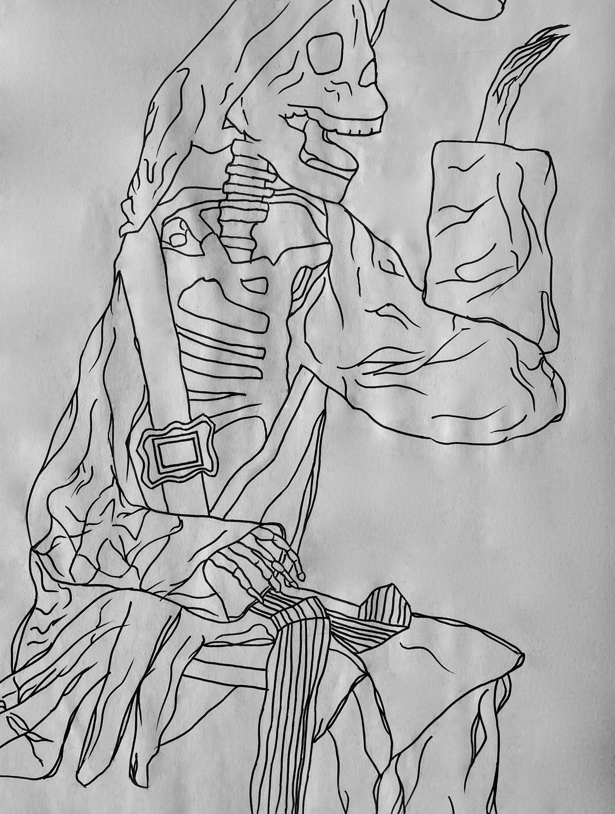
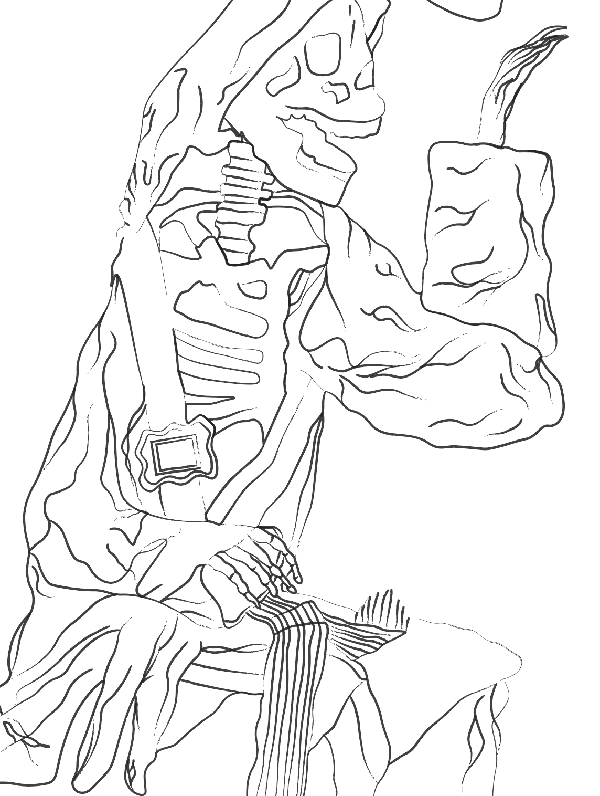
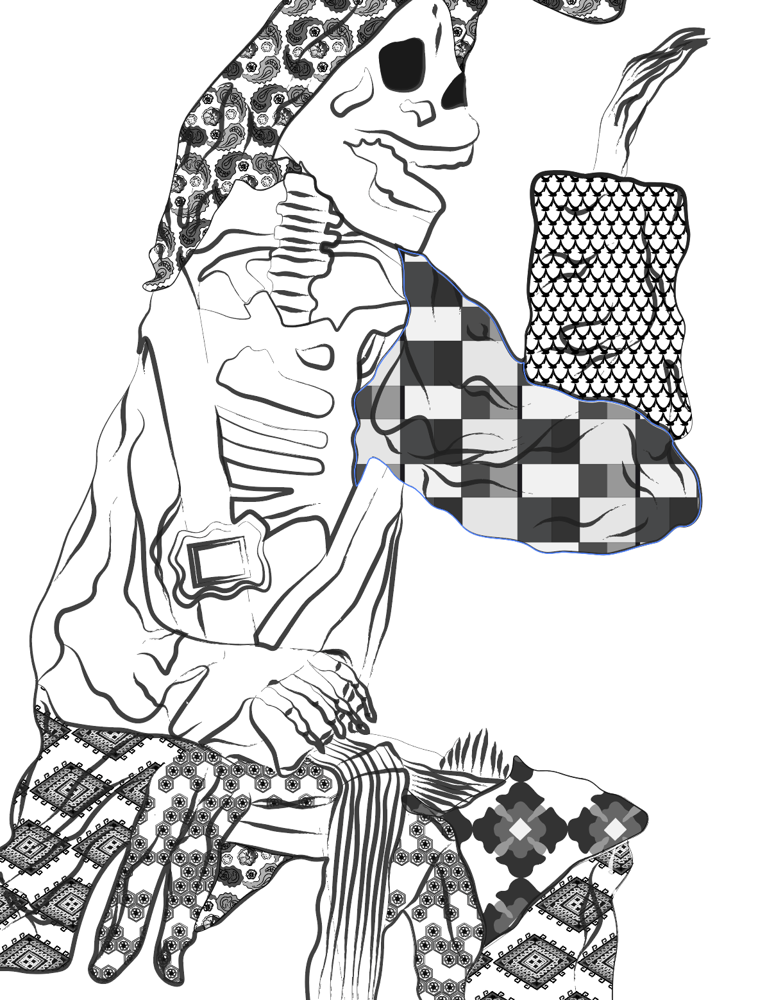
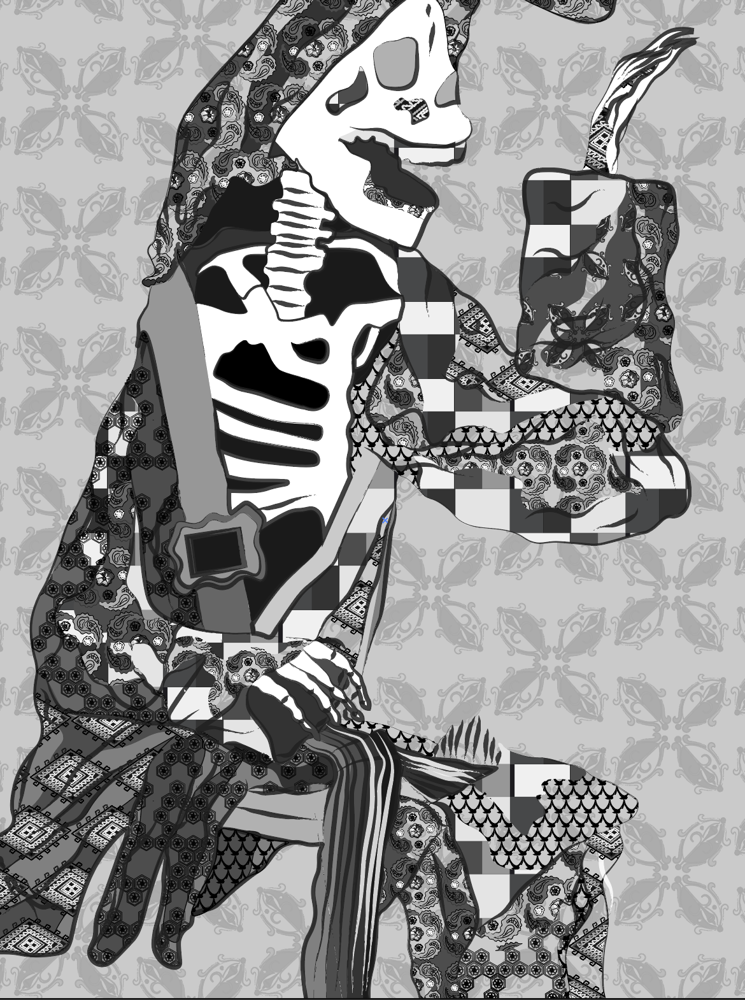
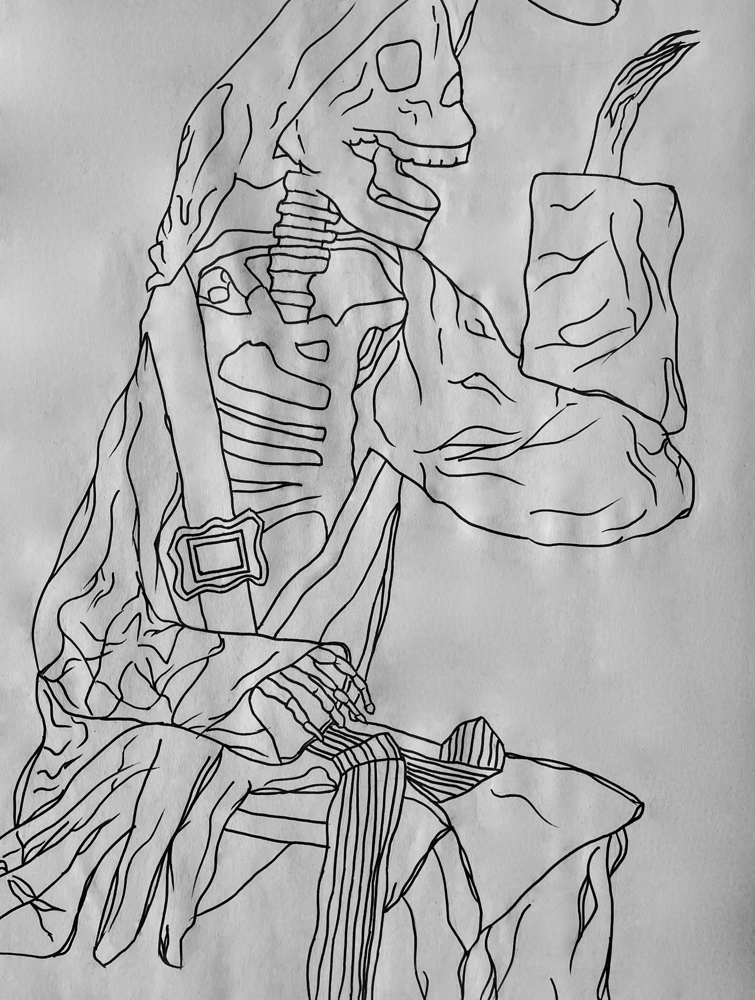
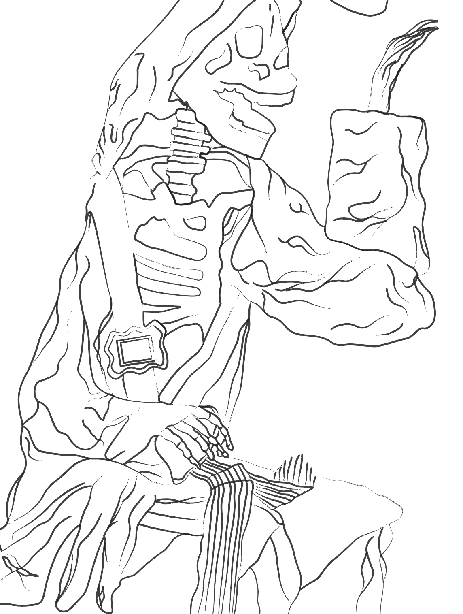
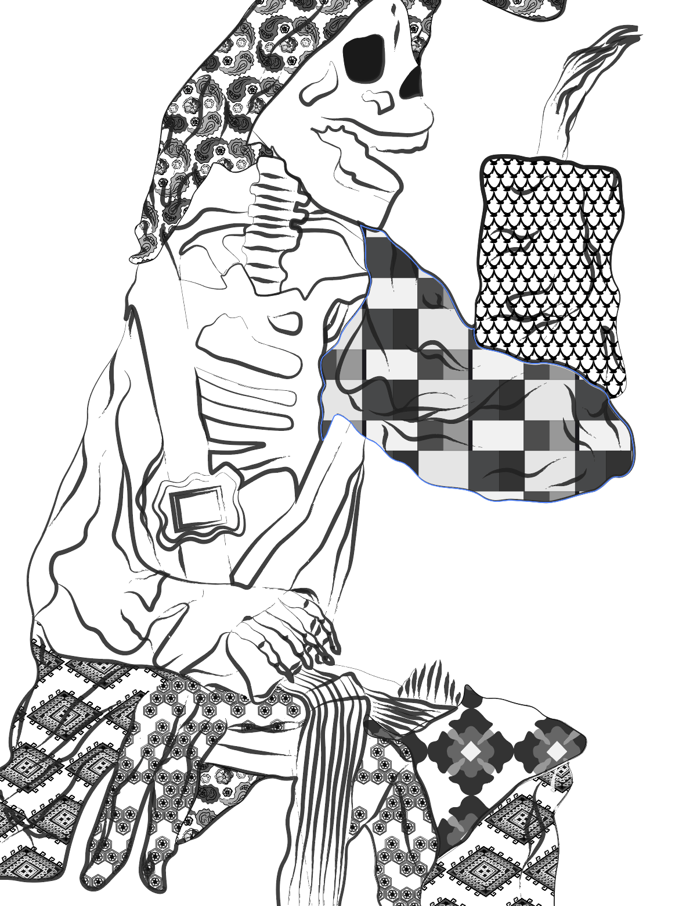
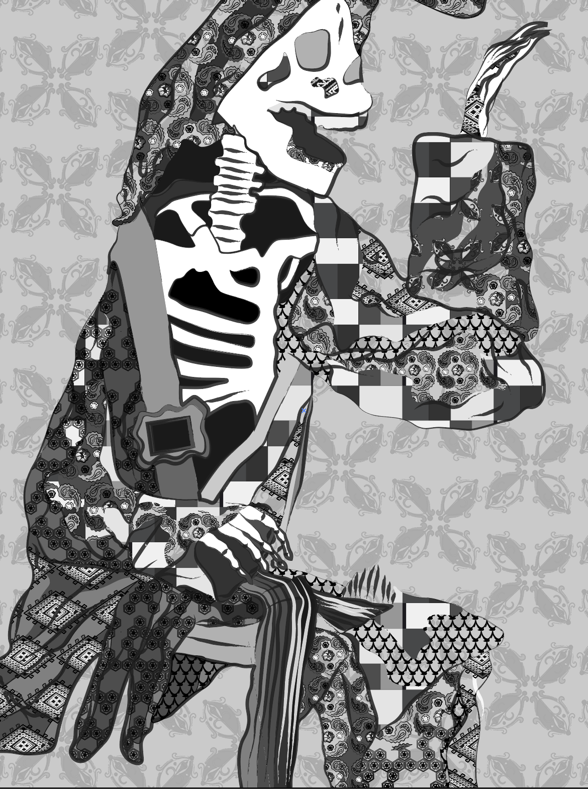
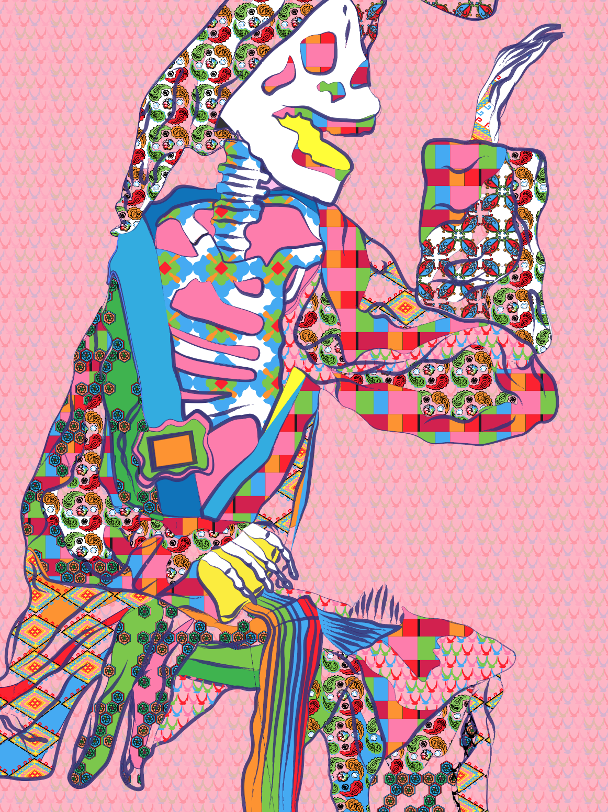

SKELETON MAN
What began as another entry to take you through my process of making
 







We had one class to complete a study of the skeleton from the angle our desks were placed in and I had a side profile view of the subject. Understanding and creating the folds of the fabric was especially tricky for me and through the sketch I focused a lot on getting the movement of the cloth right.
I began by making a simple line drawing of the skeleton. I decided to make a composition completely out of random shapes and lines after trying to make the subject entirely out of shapes and then using pathfinder, as joining and deleting shapes was not accurate to how I wanted to portray the skeleton.
After locking the drawing, I experimented with placing patterns in new shapes on top based on the contours of the fabric and bones. After I was satisfied with the placement of the pattern, I locked it and added more patterns/ grey scale colours on top to give it an additional depth.
This is the point where my composition started to have a certain aesthetic and when it began to come together. I did not want to use the colours and the patterns conservatively and that created the challenge of balancing a lot of elements which could very easily blend in together and create an image that is not easy to follow. But as I continued to switch around between different colours and patterns across the pattern man, I began to create a distinguishable yet dynamic pattern man.
It was also important to me to give empty space to the composition and I achieved this by giving a solid colour blocking to certain areas of the subject. For example, the skull and the bones, the dark area behind and on the strap across the chest. On the fabric, I wanted to experiment with different layering, and that is why some areas only have one pattern directly on the background, only colour, patterns on top of patterns and patterns on top of colours. With the coloured pattern man, I continued the theme of a very busy, visually stimulating composition. I enhanced these factors by using six, bold colours for the patterns: orange, green, blue, red, yellow and blue. I added patterns in the shapes on the face of the skeleton as well as solid, loud colours like yellow and blue in blocks to to make it grasping. This was far beyond my comfort levels and I would have much rather focused on creating a more visually relaxed composition, but with this assignment I wanted to see how far I could take all the elements to create something wild, yet interesting. I followed a similar approach to creating the background as I did for the black and white – by creating a layer with a dim shade from the colour palette, and adding one of seven shapes with a low opacity to enhance the tone of the piece.
Entry #3 SKELETON MAN 26TH SEPT 2022